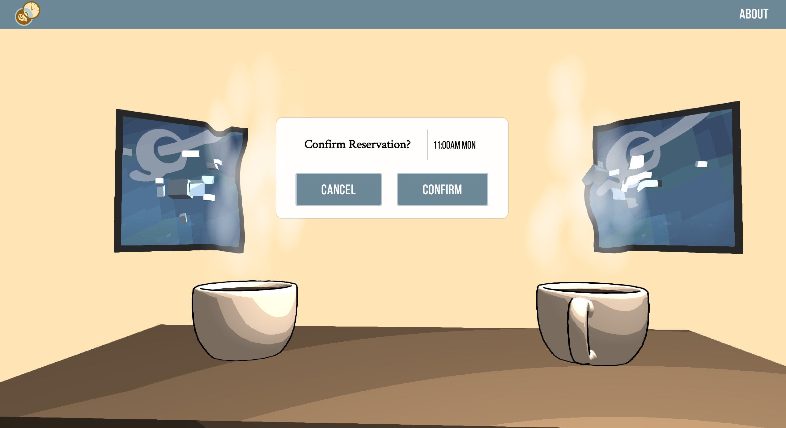
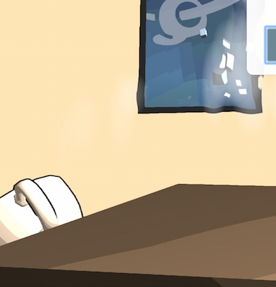

WebGL Coffee Scene

Maisie Johnson
CPE 471 Final Project (2015)
Overview
My final project is a WebGL scene that is displayed in the background of a simple web user interface. It is intended to explore the possibilities of 3D scenes within web user interfaces. The idea is similar to how some video games have main menus that render a 3D animated scene in the background.
In particular, this project simulates a coffee shop reservation system with a confirmation page. The background shows a typical coffee shop scene. Clicking confirm or cancel moves the coffee mugs around in the background.
Features and Implementation Details
- Cel shading: Implemented by rounding a fragment's color to the nearest color in a small set of possible colors. The outlines are created by moving all vertices a fixed amount along their normal, shifting them a fixed amount away from the camera, and drawing the resulting fragments in all black.
- Steam particles: Steam floats above the coffee mugs
- Post-processing steam distortion: The main scene and the steam particles are rendered to two separate textures, and a final fragment shader combines the results of the two. Depending on the amount of steam on a fragment, an offset is added to the fragment drawn for the main scene.
- Anti-aliasing: FXAA is applied alongside the distortion effect, to prevent jagged lines caused by the distortion.
- Boids: The cubes floating in front of the paintings are following the Boids algorithm described in Lab 9. Floating cubes are a must for complementing modern art paintings in upscale coffee shops.
- Textures: The two paintings in the back are examples of rendering textures on faces.
- Animations: The coffee mug movements are based on a few simple physics formulas, and collision locations are hardcoded. The wobbling coffee inside each mug is a hierarchal animation.
- UI: There are two buttons and the camera can be controlled with the mouse.
References

Libraries
- sylvester and glUtils.js from Mozilla used for matrices and vectors
- AngularJS for UI
- jQuery and Underscore.js
Resources
{kind=link}